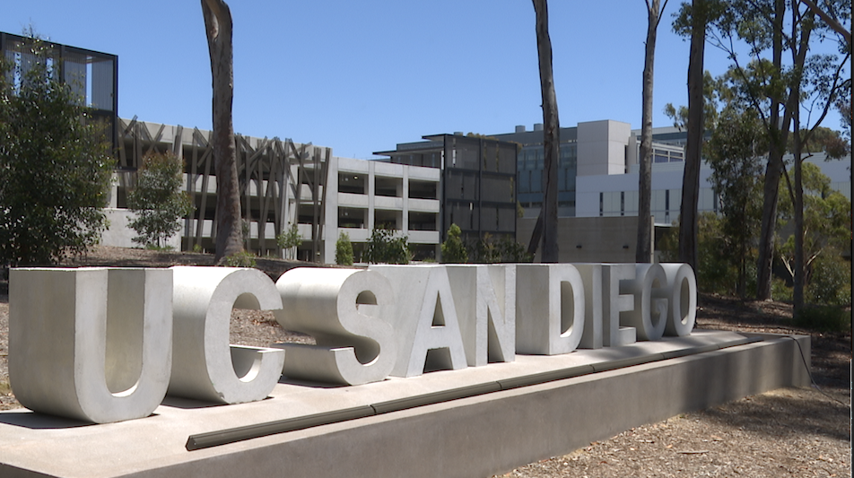

After High School

At UCSD, I plan to continue my education and study biology with a focus on bioinformatics. I am interested in how science, data, genetics, and technology can work together to help us better understand life and disease.
My future goals are connected to both curiosity and purpose. I want to keep learning, keep improving, and eventually contribute to research or biomedical work that can make a meaningful difference in people’s lives.
My Goals
| Goal | Why It Matters to Me |
|---|---|
| Study Biology and Bioinformatics | I want to understand life through science, genetics, and data. |
| Continue Music | Violin and orchestra are important parts of my identity. |
| Gain Research Experience | Research will help me explore real scientific questions and prepare for my future. |
| Keep Growing as a Person | I want to become more disciplined, confident, creative, and independent. |
The Bigger Picture
For me, the future is not just about having a career. It is about becoming someone who can combine intelligence, creativity, compassion, and hard work. Whether I am studying science, playing music, or building new skills, I want my future to reflect both who I am and who I am trying to become.